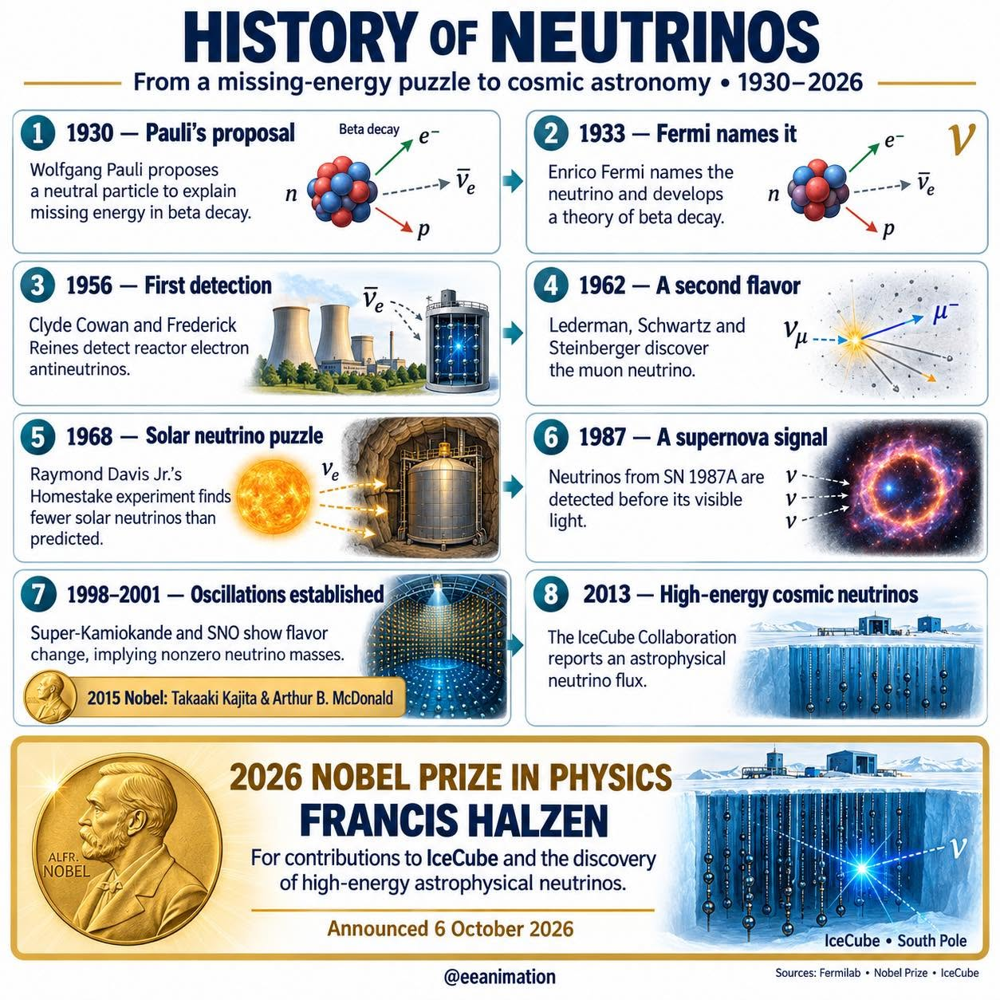
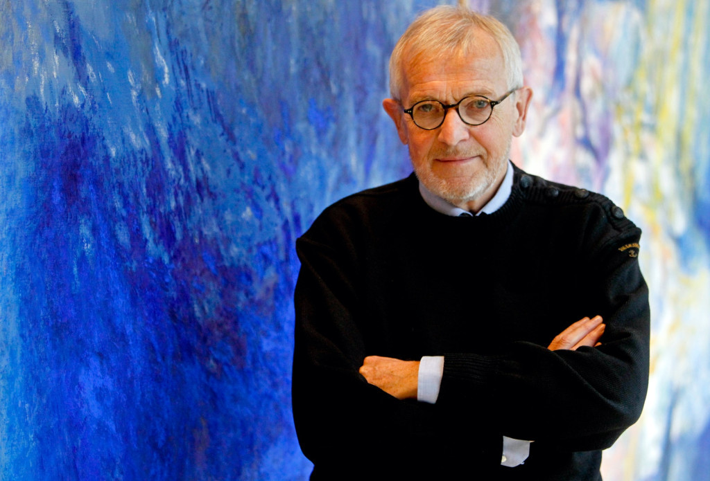
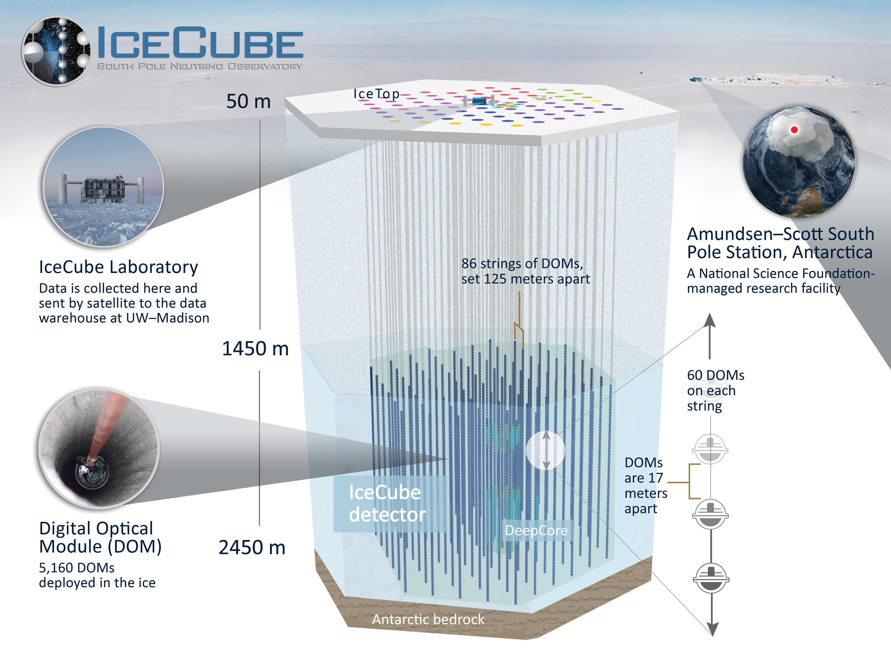

A világűr legrejtélyesebb, „szellemszerű” elemi részecskéje

A neutrínók olyan alapvető elemi részecskék, amelyek az anyaggal szinte alig lépnek kölcsönhatásba.
Mivel nincs elektromos töltésük, teljesen érzéketlenek az elektromágneses kölcsönhatásra. Ezért képesek gond nélkül áthaladni akár egy fényév vastagságú ólomfalon is.
Évtizedekig úgy hitték, hogy nincs tömegük. A modern kutatások kimutatták, hogy van tömegük, de az még az elektron tömegének az egymilliomod részénél is kisebb.
Három típusa létezik, mindegyik egy-egy töltött leptonhoz kapcsolódik: **elektron-neutrínó**, **müon-neutrínó** és **tau-neutrínó**.
A részecske felfedezése a modern fizika egyik legizgalmasabb detektívtörténete.
Az IceCube a világ egyik legkülönösebb csillagászati műszere. Mivel a neutrínók szinte akadálytalanul áthaladnak a normál anyagon, észlelésükhöz gigantikus méretű céltárgyra van szükség. Francis Halzen zseniális ötlete az volt, hogy magát az antarktiszi jégtakarót alakítsa át detektorrá.
A kutatók egy teljes köbkilométeres jégtömbbe, 1,5 és 2,5 kilométer közötti mélységbe 86 fúrólyukat készítettek, amelyekbe több ezer rendkívül érzékeny fényérzékelő gömböt engedtek le. Amikor egy kozmikus nagy energiájú neutrínó ritka módon összeütközik egy jégben lévő atommaggal, egy másodlagos töltött részecske keletkezik. Ez a részecske a jégben a fénysebességnél is gyorsabban száguld, kékes villanást (úgynevezett Cserenkov-sugárzást) hagyva maga után. Ezt a halvány kék fényt rögzítik a szenzorok, amiből visszafejthető a neutrínó pontos iránya és energiája.


Miközben ezt a szöveget olvasod, másodpercenként körülbelül 100 billiárd neutrínó száguld át a testeden (túlnyomórészt a Napból érkezők), anélkül, hogy bármilyen nyomot hagynának maguk után.